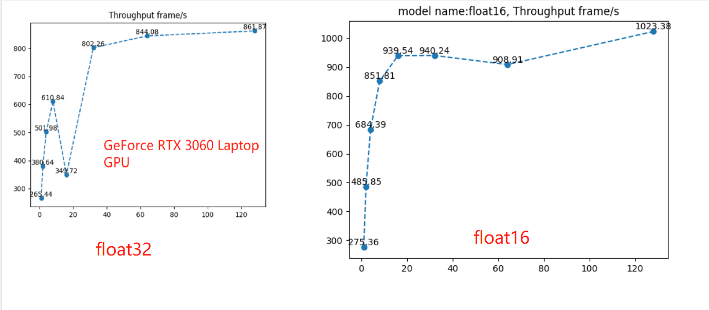
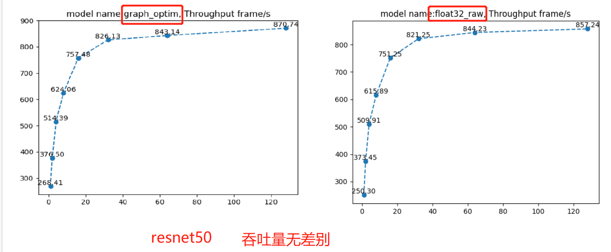
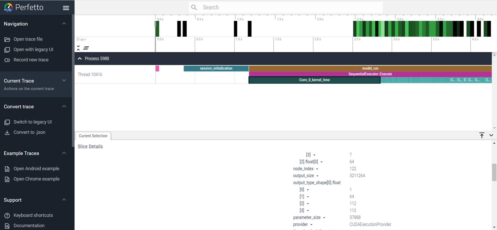

11.3 ONNXRuntime 进阶使用
前言
模型部署推理，除了换了一个框架平台外，最重要的是推理框架平台支持各种优化方法，使得模型推理效率更高。
在onnxruntime中也提供了一些优化方法，例如float16量化、int8量化、计算图优化等操作。
本小节就介绍在onnxruntime中实现float16量化、int8量化、混合精度量化、计算图优化、线程管理和IO binding。
- float16量化、int8量化、混合精度量化：都是从数据存储及运算角度出发，提高运行效率
- 计算图优化：是从计算逻辑上优化计算过程
- 线程管理：是从设备资源分配及调度的角度，充分利用cpu资源以应对并行、串行的任务
- IO binding：是从数据在设备之间迁移的问题考虑，将数据提前绑定到gpu上，减少cpu与gpu之间的通信
float16量化
float16量化是常用的，精度损失较小的量化策略，通常模型的精度是float32，即一个浮点数用32位来表示，它占用4字节。
但大多数情况下，用16位表示浮点数，已经能满足要求。因此，在推理时可以将模型从float32转为float16。
float16的量化需要用到 onnxconverter-common库，先提前安装：pip install onnx onnxconverter-common。
然后只需要调用convert_float_to_float16，就可以把onnx模型转换为float16的模型。
import onnx
from onnxconverter_common import float16
model = onnx.load("path/to/model.onnx")
model_fp16 = float16.convert_float_to_float16(model)
onnx.save(model_fp16, "path/to/model_fp16.onnx")
通过配套代码，进行性能测试，可以看到相比于float32的效率，float16在吞吐量上18.8%（（1023-861）/861）的提升。

除了性能效率提升，float16的onnx模型只有48.7MB, float32占97.4MB，磁盘存储占用少了50%。
int8量化
既然能用低比特表示模型，能否再进一步简化，采用8bit来表示float32呢？当然可以，8bit量化是一种常用于移动端、边缘端的优化策略。
量化又分动态量化（dynamic quantization）和静态量化（static quantization），这里采用动态量化演示，动态量化直接将数据量化到固定的8bit，而静态量化需要采用校准数据集进行一段时间的推理后，得到量化结果。
int8/uint8动态量化只需要采用两行代码，即可将量化后的模型保存到本地。
from onnxruntime.quantization import quantize_dynamic, QuantType
_ = quantize_dynamic(path_model_float32, path_model_int8, weight_type=QuantType.QInt8)
int8的onnx模型只有24.4MB, float32占97.4MB，float16占48.7MB，比float32少了75%，比float16少了50%。
通过配套代码，进行性能测试，发现int8的推理速度非常慢，连cpu的比不上，其中的原因可能是硬件的不匹配？
关于int8量化，也需要支持int8计算的显卡，例如T4和A100显卡。
“Hardware support is required to achieve better performance with quantization on GPUs. You need a device that supports Tensor Core int8 computation, like T4 or A100. Older hardware will not benefit from quantization.”
混合精度
当float16精度不够的时候，可以考虑混合精度，在有必要的地方变为float16，其它地方保持float32，这样可以实现精度和速度的权衡。
混合精度的实现与float16导出类似，需要额外注意的是要给模型一些测试数据，用于评估哪些是float16，哪些是float32。
from onnxconverter_common import auto_mixed_precision
import onnx
model = onnx.load("path/to/model.onnx")
model_fp16 = auto_convert_mixed_precision(model, test_data, rtol=0.01, atol=0.001, keep_io_types=True)
onnx.save(model_fp16, "path/to/model_fp16.onnx")
计算图优化
除了对数据的量化，计算图层面的优化也可以提高推理效率，例如移除不必要的层、网络层的融合：
- Identity Elimination
- Slice Elimination
- Unsqueeze Elimination
- Dropout Elimination
Conv Add Fusion
Conv Mul Fusion
- Conv BatchNorm Fusion
- Relu Clip Fusion
- Reshape Fusion
整体上，计算图优化分为三个level：Basic、Extended和Layout Optimizations。
代码实现上比较简单，是在InferenceSession实例化的时候，添加sess_options，就可实现计算图优化。
sess_options需要设置优化的类型，以及优化后模型保存路径。
优化类型有4个level可选：
GraphOptimizationLevel::ORT_DISABLE_ALL -> Disables all optimizations
GraphOptimizationLevel::ORT_ENABLE_BASIC -> Enables basic optimizations
GraphOptimizationLevel::ORT_ENABLE_EXTENDED -> Enables basic and extended optimizations
GraphOptimizationLevel::ORT_ENABLE_ALL -> Enables all available optimizations including layout optimizations
import onnxruntime as rt
sess_options = rt.SessionOptions()
# Set graph optimization level
sess_options.graph_optimization_level = rt.GraphOptimizationLevel.ORT_ENABLE_EXTENDED
# To enable model serialization after graph optimization set this
sess_options.optimized_model_filepath = "<model_output_path\optimized_model.onnx>"
session = rt.InferenceSession("<model_path>", sess_options)
通过配套代码，可以观察吞吐量，发现没有得到任何变化，这可能与设备有关，在这里暂时不深究，后续生产真用到了，再回来看。

在这里需要注意的是，由于onnx的显存不能自动释放，一次性跑两个模型的效率评估的话，第二个模型会受到资源问题，导致效率评估不准确，这里代码中需要手动切换两个模型，分两次跑。上图中vgg的float32的bs=16时，性能突然降低，或许就是因为资源问题。
线程管理
onnxruntime提供线程管理功能，可以通过调整不同的参数来控制模型的运行方式和性能。该功能的主要特点包括：
- 控制线程数量：使用sess_options.intra_op_num_threads参数可以控制模型运行时所使用的线程数
- 顺序执行或并行执行：使用sess_options.execution_mode参数可以控制运算符在图中是顺序执行还是并行执行。当模型具有较多的分支时，将该参数设置为ORT_PARALLEL可以提供更好的性能。
- 控制并行执行的线程数量：在sess_options.execution_mode = rt.ExecutionMode.ORT_PARALLEL的情况下，可以使用sess_options.inter_op_num_threads参数来控制在不同节点上并行执行图时使用的线程数。
由于配套代码中运行的结果并没有得到提升，这里猜测与硬件设备有关，因此就不讨论线程参数设置的问题了。
I/O binding
IO Binding 用于在运行计算图之前将输入和输出张量绑定到设备上，以提高运行效率。
IO Binding 可以避免在运行计算图时将输入和输出数据从 CPU 复制到设备上，从而减少数据复制操作所需的时间。
同样地，配套代码中的案例没有得到效率提升，也无法进一步探讨了，这里可以作为参考代码。
当输入和输出张量比较大时，使用 IO Binding 功能可以显著提高计算图的执行效率，因此在后续的任务中尝试使用 IO binding。
运行耗时分析工具
onnxruntime还提供了一个运行耗时分析工具，在sess_options中设置sess_options.enable_profiling = True，就可以在当前目录输出一份json文件，根据json文件中详细记录了运行时间和性能数据。每个事件条目包括以下信息：
- cat：事件的分类，可以是Session（会话）或Node（节点）；
- pid：进程ID；
- tid：线程ID；
- dur：事件持续时间，以微秒为单位；
- ts：事件的时间戳，以微秒为单位；
- ph：事件的类型，可以是X（完整事件）或B（事件开始）/E（事件结束）；
- name：事件的名称；
- args：事件的参数，包括输入和输出张量的类型、形状和大小，以及线程池的名称、线程ID和运行时间。
通过配套代码，获得json文件，还可以通过网站：https://www.ui.perfetto.dev/， open trace file打开json进行可视化观察。

小结
本小节介绍了onnxruntime在性能优化上的一些技巧，包括float16量化、int8量化、混合精度量化、计算图优化、线程管理和IO binding。
但由于本机设备原因，并没有看到有多大的性能优化，大家也可以在自己设备上尝试一下运行效率的变化，按道理这些技巧是能提速的。
这些优化技巧是模型部署过程中常见的加速技巧，在其它框架中也会有实现，这些在TensorRT中会再详细展开。